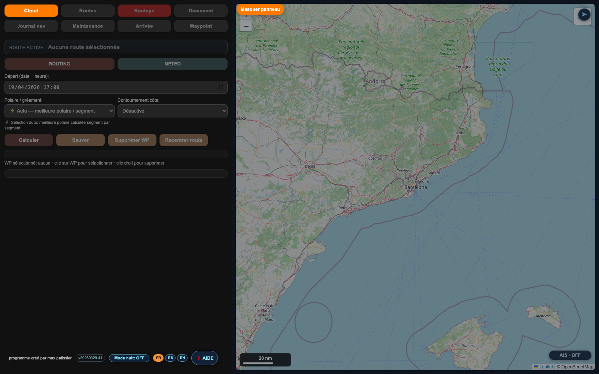
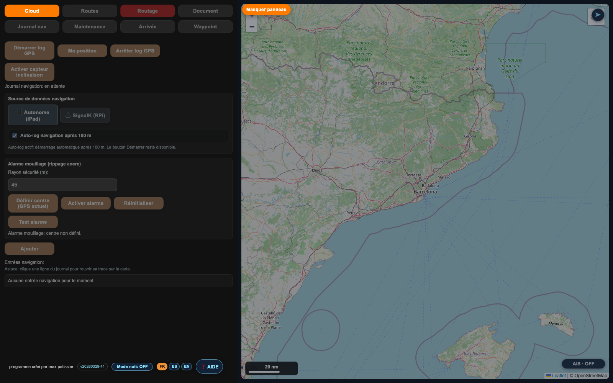
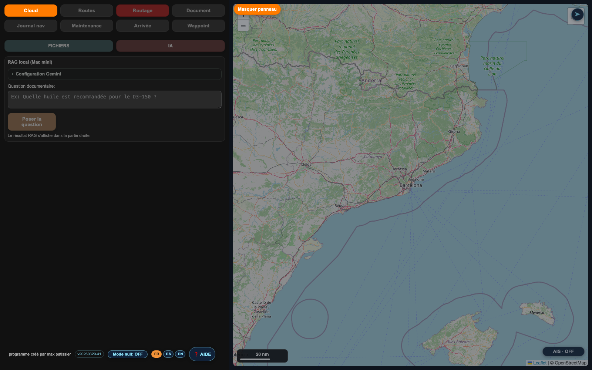
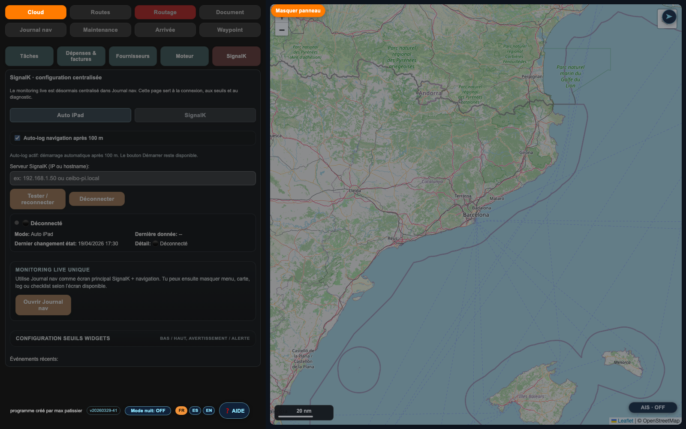

CEIBO
CEIBO est une application nautique modulaire qui associe interface cartographique, calcul de route, ingestion de données embarquées, journalisation opérationnelle, maintenance technique, base documentaire assistée par IA et synchronisation cloud.
Objectif technique
Sur le plan logiciel, CEIBO vise à fournir un noyau applicatif unique pour les usages de navigation et d'exploitation du bateau. L'intérêt de cette approche est de partager les mêmes objets de travail entre plusieurs modules : routes, points, traces GPS, documents, dépenses, états techniques, profils polaires et informations issues de l'instrumentation.
La cohérence du système repose sur la convergence de quatre couches : interface opérateur, calcul et enrichissement local, flux de données bord, et persistance/synchronisation cloud.
Architecture fonctionnelle
Modules techniques principaux
1. Couche cartographique et routage
- Carte interactive basée sur Leaflet avec couches marines, météo, AIS et overlays d'analyse.
- Gestion des waypoints, édition directe et recentrage de trajectoires.
- Calcul de route lié à un moteur de polaires et à des paramètres de départ.
2. Couche logbook et télémétrie
- Capture périodique des positions GPS et constitution de traces exploitables par entrée de journal.
- Enrichissement du contexte avec vitesse, cap, météo ponctuelle et données de mouvement.
- Détection et suivi d'états opérationnels tels que l'alarme de garre ou le mode moteur.
3. Couche maintenance
- Objets métier distincts pour schémas, pastilles, fournisseurs, dépenses et événements moteur.
- Association entre éléments visuels de maintenance et pièces justificatives.
- Possibilité de rapprocher les incidents, les coûts et l'état des systèmes techniques.
4. Couche documentaire et IA
- Indexation locale de documents techniques pour interrogation RAG.
- Historique de questions, paramétrage de fournisseur externe et modes de réponse.
- Fonction de capitalisation de connaissance directement réutilisable à bord.
Intégrations et flux de données
SignalK
CEIBO s'appuie sur un connecteur SignalK dédié pour récupérer des données de navigation et d'environnement. Cela permet de faire converger les instruments du bord avec les modules journal, maintenance et monitoring.
- Position, vitesse, cap et gîte.
- Variables météo et capteurs complémentaires.
- Mode dégradé possible si la source réseau n'est pas disponible.
Supabase
La couche cloud n'est pas seulement un stockage distant. Elle joue un rôle de synchronisation, d'authentification, de partage de données et de continuité opérationnelle entre appareils.
- Authentification utilisateur et gestion de rôles.
- Tables dédiées aux routes, points, documents, journaux et maintenance.
- Support des fichiers et de la synchronisation différée.
RAG local
Le module documentaire peut s'appuyer sur un service local pour indexer et interroger des contenus techniques. Cette approche limite la dépendance réseau et permet un usage embarqué plus autonome.
GRIB et météo
Le système accepte des données météo externes via API ou import local. Cela rend possible une exploitation hybride entre services en ligne et fichiers météo embarqués.
Logique de persistance
- L'application conserve localement ses états métiers pour garantir la continuité d'usage hors réseau.
- Les modules critiques peuvent être hydratés depuis le cloud à l'ouverture ou à la demande.
- Les changements sont ensuite poussés vers Supabase selon des logiques adaptées au type de donnée, par exemple en différé pour les journaux ou automatiquement pour certains objets synchronisés.
- Cette organisation réduit les pertes de données et limite les écritures réseau inutiles lors d'un usage réel en navigation.
Exemple de chaîne de traitement
Préparation
- L'utilisateur charge ou construit une route.
- Les polaires et la fenêtre météo sont appliquées au calcul.
- Le routage produit un scénario exploitable et mémorisable.
Exécution
- Le journal nav enregistre la progression, en autonome ou via SignalK.
- Les points de trace sont enrichis par des données contextuelles.
- Les alertes et statuts critiques restent accessibles depuis le même poste.
Post-navigation
- Les traces deviennent un historique consultable et exportable.
- Les événements techniques peuvent être rapprochés des observations de route.
- Les documents, factures ou manuels peuvent ensuite être réinterrogés pour préparer une intervention.
Capitalisation
- La couche cloud partage ces données entre appareils et utilisateurs.
- La base documentaire enrichit la connaissance embarquée.
- L'ensemble constitue une mémoire opérationnelle du bateau.
Captures d'écran




Conclusion technique
CEIBO présente une architecture intéressante parce qu'elle ne juxtapose pas des fonctions isolées. Elle articule des objets métiers communs, des flux temps réel, des traitements locaux et une synchronisation cloud dans un environnement unique centré sur la pratique de la navigation.
Techniquement, le programme se distingue surtout par la densité de ses intégrations, la continuité entre usage hors ligne et usage connecté, et la convergence entre données du bord, maintenance et documentation.
Documents connexes observés dans le dépôt : app.js, polarRouter.js, signalk.js, rag/, weather/, supabase/.